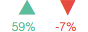
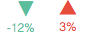
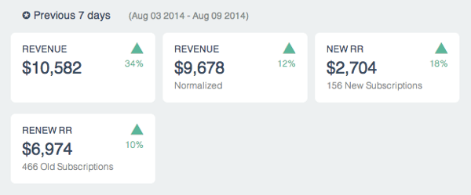
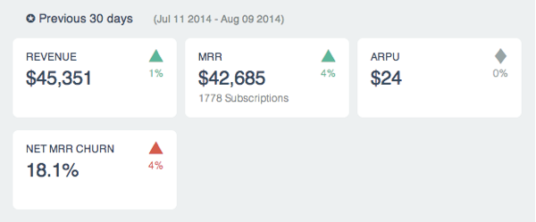

How to read the Weekly Email Report
When you get it:
Every Sunday, although the reporting weekday is customizable
Use:
See how your last week looks in numbers. Follow up trends in monthly metrics.
Symbols:
Green = better. Red = worse.
Upwards arrow = larger value than previously.
Downwards arrow = smaller value than previously.
For most metrics, like revenue & MRR, bigger value is better:

For churn rate, smaller value is better:

Metrics from previous 7 days:
In this section all numbers are compared to the same numbers from a week ago.

Revenue:
Revenue from the last 7 days. The days included are shown in gray.
Revenue (Normalized):
Normalized subscription revenue and single purchases from the last 7 days.
New RR:
Normalized subscription revenue from new customers during the last 7 days.
Renew RR:
Old customers' contribution to normalized subscription revenue during the last 7 days. May contain revenue that was not charged this week (due to prepayments). Includes upgrades and downgrades.
Metrics from previous 30 days:
These rolling metrics are calculated using a 30 day period and they cannot be compared week-to-week. They only show trend changes in monthly performance.
Numbers are compared to the same numbers from 30 days ago. For example, if the reporting period was July 11th to August 9th, the numbers are compared to period June 11th to July 10th.

Revenue:
Revenue from the last 30 days. The days included are shown in gray.
MRR:
Monthly Recurring Revenue (MRR), also called monthly normalized subscription revenue.
New RR:
Normalized subscription revenue from new customers during the last 30 days.
ARPU:
Average recurring revenue per subscription during the last 30 days. Includes all customers who contributed recurring revenue. Net MRR Churn Rate The percentual loss of recurring revenue as it existed 30 days ago. Includes losses, downgrades and upgrades, but not new MRR. Net churn rates are not normalized.
About calculations:
Any refunds and discounts affecting the reporting period are taken into account. All the metrics are in UTC time.
Pitfalls:
When your business is small, changes in numbers may cause large percentual changes. So don't sweat about the changes - fluctuations are normal.